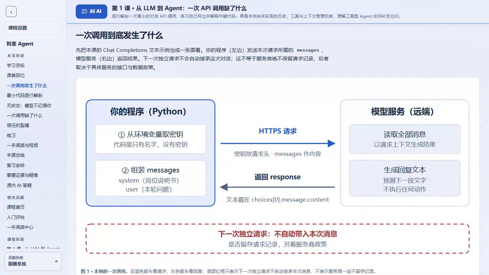

重邮FFBond · 自适应教学 Skill 技能包
让下一次学习，
接着这一次的理解。
把学习目标、课程与本地学习记录连接起来。
先评估基础，再逐课教学，依据作答与疑难安排下一步。

智鉴 Agent · 智能体开发与安全实战 查看第一课 →01 / 从目标到下一课
一套持续接续的教学工作流
学习者阅读、作答和提问；教学 AI 维护路线，读取记录，再安排下一步。
- 01
访谈与评估
明确目标、基础、时间与学习偏好，确定起点。
- 02
逐课讲解与练习
图解建立理解，练习留下解释、应用与迁移证据。
- 03
依据记录接续教学
正式课推进新目标，独立补充课处理具体难点。

02 / 走进真实课程界面
从一次 API 调用，走向安全的 Agent
智鉴 Agent 展示三节正式课和一节独立补充课；统计学案例展示相同教学方法在另一学科中的应用。
03 / 跟着同学体验一次
从评估到答疑，再到续课
约 2 分 51 秒：架构讲解、课程图解、DeepSeek 与上下文设置、新版课内答疑、真实问答回放、题后作答与后续课程。
师生情感型合成配音 · 课程操作实录 · 视频内含中文字幕
04 / 把教学工作区带回自己的电脑
浏览课程，或开始完整学习体验
在线示例支持课程阅读、练习检查、主题切换和浏览器内作答保存。下载课程并启动后，可连接自己的答疑模型，将作答与聊天保存到课程目录，再让教学 AI 读取记录继续授课。
- 导入 Skill
将
teach-pro导入 TeleAgent 或支持 Skill 的宿主，提出学习目标。 - 启动下载的课程
解压课程 ZIP。Windows 双击
start-course.cmd；macOS 双击start-course.command；Linux 运行sh start-course.sh。 - 连接模型，学习后续课
进入课程设置，选择服务、输入密钥、获取模型并保存。在课内提问，完成练习后回到宿主请求继续。
从一句学习目标开始
向教学 AI 发送：
@teach-pro 我想系统学习统计学，先评估我的基础再开课。
学完后继续：
@teach-pro 我已完成本课，请读取课程目录里的作答与疑难，安排下一步。